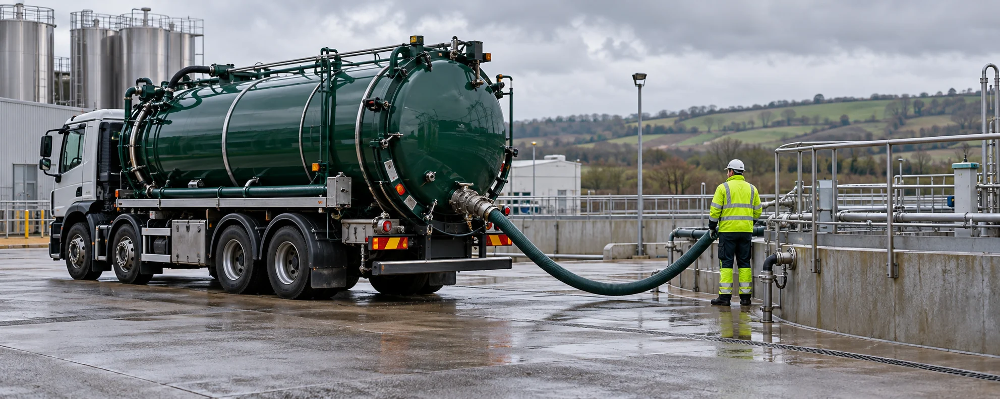

Asset management. Drainage. Waste management.
Solutions that keep
your site flowing.
ASG takes responsibility for pump stations, drainage assets and wastewater systems. Our own telemetry collects levels, faults, flows and performance data so we can monitor intelligently, coordinate the right response and manage the work that follows.
Pump status
Signals & safeguards
Asset management
Complete care from domestic septic tanks to business storage tanks and new-build sites: telemetry, maintenance, tankers and adoption management.
Explore complete asset careDrainage & sewage
Civils and installation work for domestic and commercial drainage and treatment systems.
Explore drainage & sewageWaste management
Food, wastewater and liquid waste streams, including hazardous liquid enquiries assessed individually.
Discuss a waste streamHave a site issue or an unusual waste stream? Tell us what you need, where the site is and when it needs attention.
Send an enquiryBeyond the pump station
Solutions across the whole site.
From a domestic tank to a commercial facility or new-build development, ASG uses intelligent monitoring to understand the assets, plan the work and look after what comes next.

Built for the site above it.
Domestic and commercial installations, civils, septic tanks and treatment systems.
Explore installations
A plan for the stream you produce.
Food waste, wastewater and other liquid streams, with hazardous liquids reviewed case by case.
Explore waste managementASG service imagery
Discuss your site with an expert.
Tell us what needs attention and we can talk through the next step.
One accountable partner
Infrastructure needs more than a call-out.
Sites rely on drainage and wastewater systems that rarely get attention until something goes wrong. ASG brings installation, monitoring and maintenance together so there is a clear plan for the assets beneath your site.
We work with customers to understand their operations and shape the right service around the site and its demands.
01 / Asset management
One partner for the whole site.
One service agreement for the full system: our own telemetry, servicing, repairs, tank emptying, cleaning and response. From a small septic tank to a food-processing facility or a development awaiting adoption.
Explore asset managementKnow what is on site
Build a clear view of the assets, waste streams and maintenance needs.
Plan the ongoing work
Bring monitoring, inspections, servicing and scheduled collections together.
Respond when needed
Coordinate action when faults, blockages or other issues arise.
02 / Drainage & sewage
Build it right. Keep it flowing.
Civils and drainage installation for domestic and commercial sites, from new systems to ongoing maintenance.
Explore drainage & sewageAreas of work
- Civils and drainage installation
- Septic tanks and sewage treatment systems
- Domestic and commercial site systems
- Gullies, interceptors and ongoing care
03 / ASG Waste Management
Waste solutions shaped around your site.
Food waste, wastewater and liquid waste management, including enquiries about hazardous liquid streams that need careful assessment.
Explore waste managementA service shaped around your site
Tell us what material you produce, how it is stored and the challenges it creates. We can work through collection and management options suited to the stream and your operation.
Food waste · Liquid waste · Hazardous liquid enquiriesOur base
Based in Sedgeberrow. Ready to discuss your site.
From our base near Evesham, we support domestic and commercial sites across surrounding parts of Worcestershire, Gloucestershire and Warwickshire. Send your location and requirements so we can discuss the right service for you.
Explore individual services
Support for your drainage assets.
Start a conversation
Tell us what needs attention.
Pump station fault, drainage project, planned maintenance or a liquid waste stream: email the site location, what you need and how soon. We will review the enquiry and discuss the right next step.